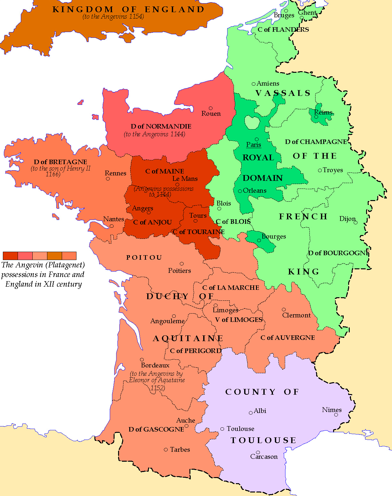
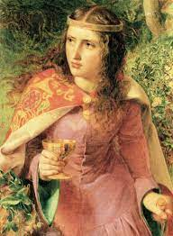
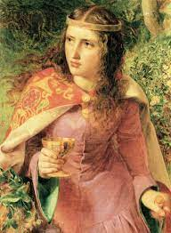

He became king after the death of the last Norman’s king.
The kingdom stretched from the Scottish Border to south France

Constitution of Clarendon It says that all everyone ( clergy included ) were subject to the crown
Conflict against the church ended in December 1170
 

He was married with Eleanor of Aquitaine
- Children list
-
- Guglielmo
- Enrico
- Matilde
- Riccardo
- Goffredo
- Giovanna
- Eleonora
- Giovanni